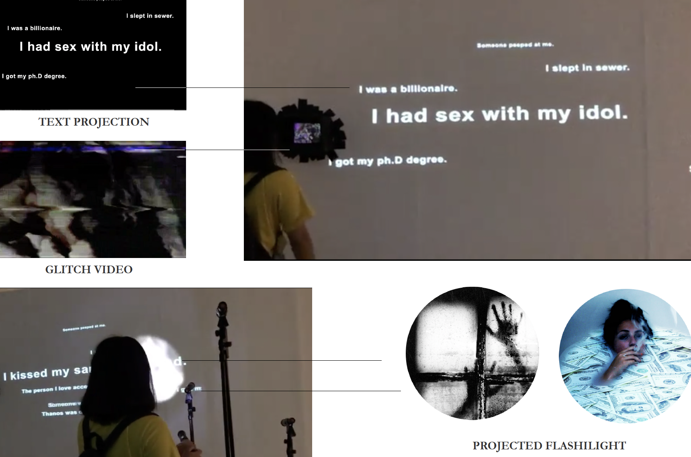

Look Deep Into Your Dream
Look Deep Into Your Dream
Interactive Art Installation
2018/05-06
UNRAVEL: SCM MFA Student Show 2018
CMC Art Gallery, City University of Hong Kong
Thoughtful day, night dream.
The things that happened in every ambiguous dream,
may have been imagined subconsciously by you.
Dreams sometimes display what is the most real you.
Your expectations, your fears, your joy, your frailty….
We have collected real dreams from people surround us, and finish the 3 parts based on those dreams to compose the installation: the projection of texts; a black box on the projection wall, which allow audience to look into it to watch the glitch videos that related to the dreams; flashlight that people could turn on and project the dream images on the wall.
Collaborated with Chen Qiuyu Zoe
